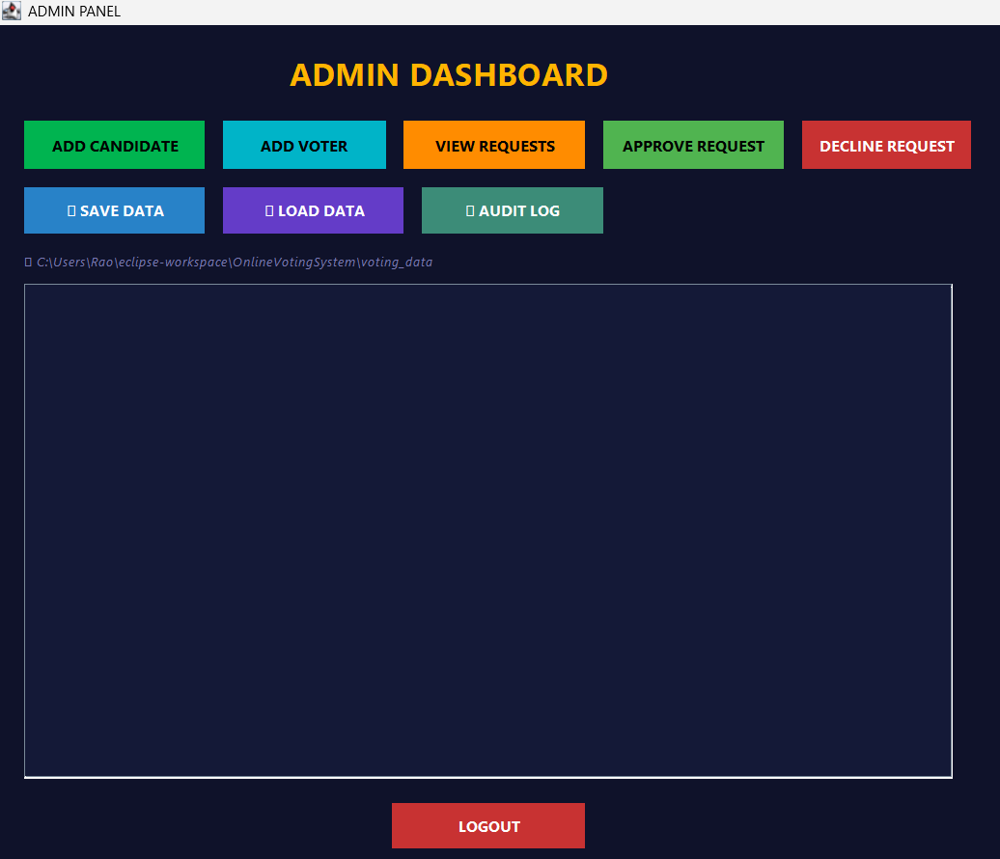
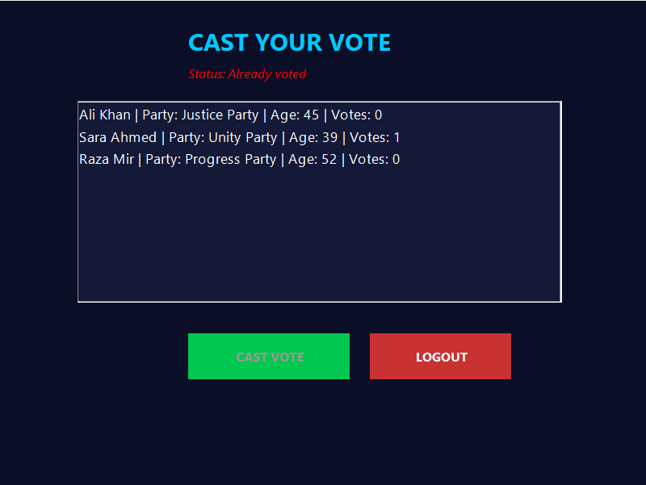
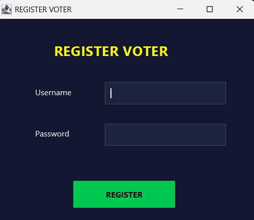
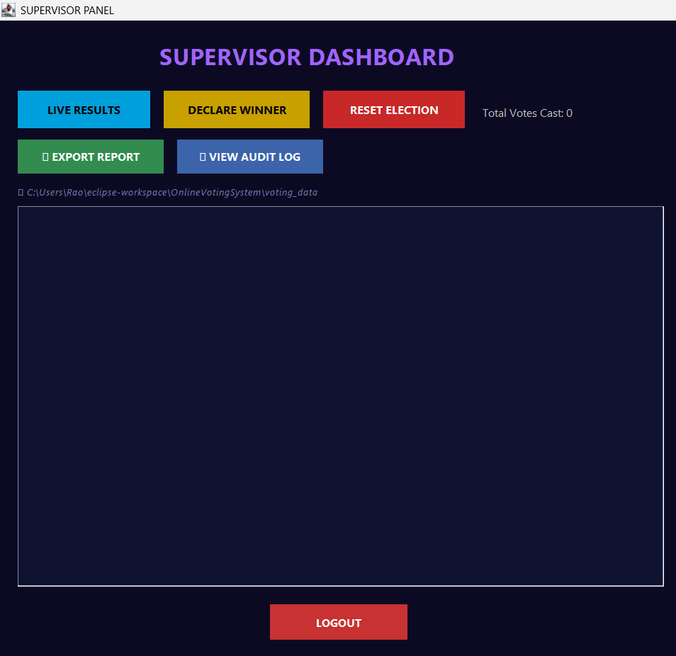
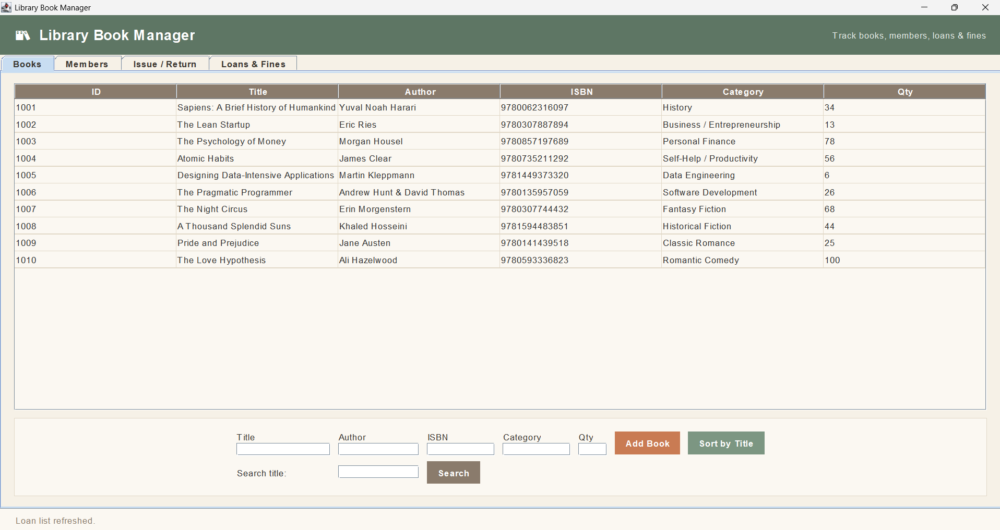
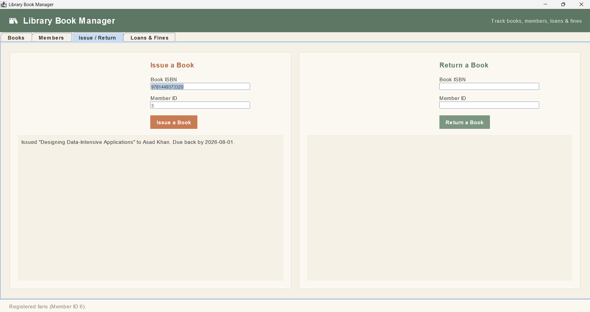
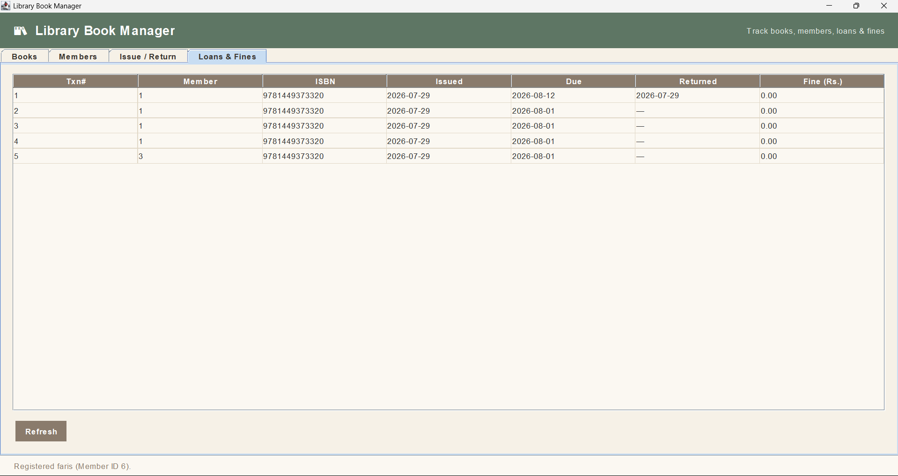
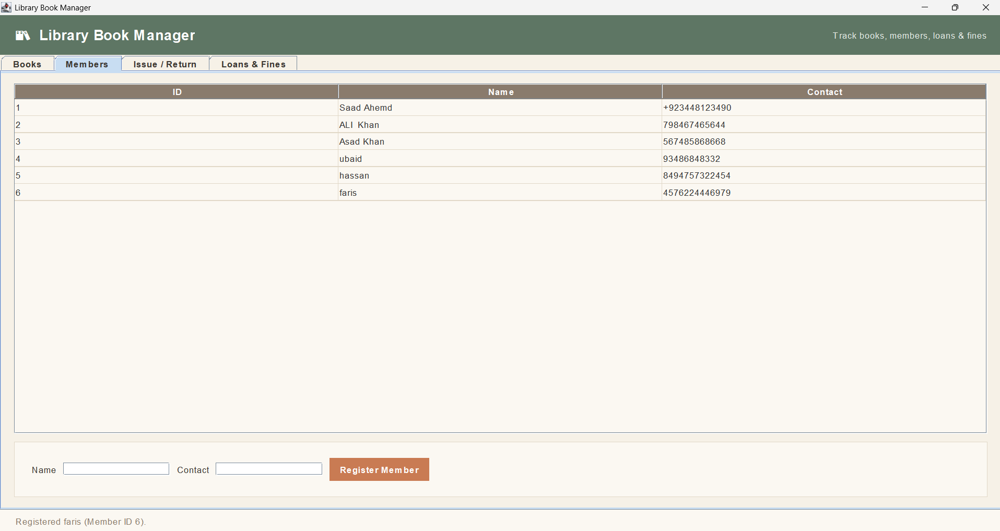

Selected work
Projects I've built.
A selection of university, internship and personal projects. Each project helped me practice programming, object-oriented design and building usable desktop applications.
Online Voting System
A Java Swing desktop application designed to manage an online election. The project includes separate workflows for administrators, voters and supervisors, along with registration and voting-related screens.




Number Guessing Game
A Java desktop game created during my Java internship. It includes a menu, game interaction and result screens, with feedback based on how close the player's guess is to the target.


Library Book Manager
A Java project focused on managing library information and practicing object-oriented programming through screens for books, members, loans and issue/return operations.




Coming next
More projects are on the way.
This space is reserved for future AI work, capstone projects and new experiments as I continue building my skills.